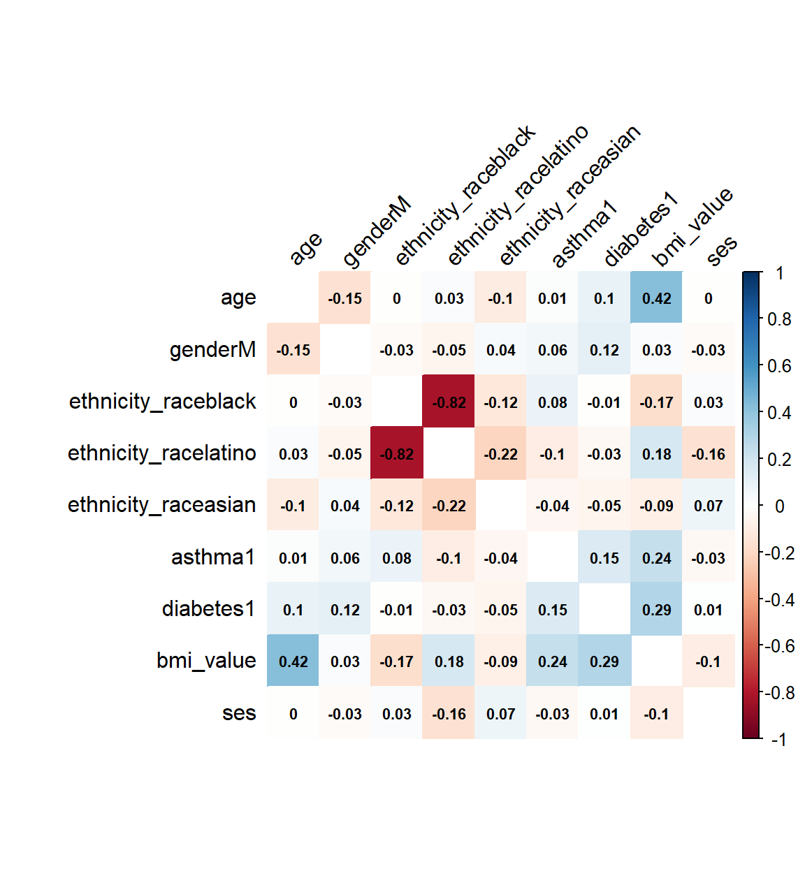

Exploratory Analysis
Setup
library(tidyverse)## -- Attaching packages --------------------------------------- tidyverse 1.3.0 --## v ggplot2 3.3.2 v purrr 0.3.4
## v tibble 3.0.4 v dplyr 1.0.2
## v tidyr 1.1.2 v stringr 1.4.0
## v readr 1.4.0 v forcats 0.5.0## -- Conflicts ------------------------------------------ tidyverse_conflicts() --
## x dplyr::filter() masks stats::filter()
## x dplyr::lag() masks stats::lag()library(patchwork)
library(corrplot)## corrplot 0.84 loadedlibrary(mgcv)## Loading required package: nlme##
## Attaching package: 'nlme'## The following object is masked from 'package:dplyr':
##
## collapse## This is mgcv 1.8-33. For overview type 'help("mgcv-package")'.library(modelr)
knitr::opts_chunk$set(
fig.width = 6,
fig.asp = 1.1,
out.width = "100%")
theme_set(theme_minimal() + theme(legend.position = "bottom"))
options(
ggplot2.continuous.colour = "viridis",
ggplot2.continuous.fill = "viridis")
scale_colour_discrete = scale_color_viridis_d
scale_fill_discrete = scale_fill_viridis_d
knitr::opts_chunk$set(comment = NA, message = FALSE, warning = FALSE, echo = TRUE)Data import and tidy
data_stats = read_csv("./data/datacomplete.csv") %>%
mutate_at(c("admitted", "ethnicity_race", "asthma", "diabetes", "gender", "obesity", "icu"), as.factor) %>%
select(admitted, icu, age, ethnicity_race, gender, ses, obesity, bmi_value, systolic_bp_value, asthma, diabetes)
summary(data_stats) admitted icu age ethnicity_race gender
no :250 0:355 Min. : 0.00 american indian: 5 F:191
yes:125 1: 20 1st Qu.:10.00 asian : 9 M:184
Median :18.00 black : 88
Mean :14.63 caucasian : 22
3rd Qu.:21.00 latino :233
Max. :22.00 multiple : 18
ses obesity bmi_value systolic_bp_value asthma diabetes
Min. :-13.506 0:255 Min. :12.03 Min. : 61 0:314 0:358
1st Qu.: -6.883 1:120 1st Qu.:18.80 1st Qu.:105 1: 61 1: 17
Median : -3.890 Median :23.54 Median :116
Mean : -4.146 Mean :25.66 Mean :116
3rd Qu.: -1.738 3rd Qu.:30.86 3rd Qu.:126
Max. : 2.931 Max. :80.84 Max. :182 Dataset exploration
This is a dataset of 375 pediatric patients 0 to 23 years of age with COVID-19 infection. First, we explore the data by generating various ggplots.
Age
There appears to be a bimodal distribution of hospital admission as a function of age. Among infants and toddlers less than 5 years of age who test positive for COVID-19, more are admitted than not admitted. However, after 16 years of age, hospitalizations for COVID-19 infection appear to be less than non-hospitalizations.
Some pediatric patients require admission to the Intensive Care Unit (ICU). Fewer infants and toddlers with COVID-19 infection require admission to the ICU until about 3 years of age. Beginning at 10 years of age, there seems to be a steeper rise in the density of ICU admissions for children with COVID-19 infection compared to non-ICU admissions.
admitt_p =
data_stats %>%
ggplot(aes(x = age, fill = admitted)) +
geom_density(alpha = .6) +
labs(
title = "Admittance/Age Distribution",
x = "Age (Years)",
y = "Density") +
theme(legend.position = "bottom")
icu_p =
data_stats %>%
ggplot(aes(x = age, fill = icu)) +
geom_density(alpha = .6) +
labs(
title = "ICU/Age Distribution",
x = "Age (Years)",
y = "Density") +
theme(legend.position = "bottom")
admitt_p / icu_p
Obesity, diabetes, and asthma
The distribution of obesity, diabetes, and asthma diagnoses in pediatric patients with COVID-19 infection by age are show below. Obesity, as defined as a body mass index (BMI) of > 30, is general not present at ages less than 10 years. After 10 years, the prevalence of obesity increases. This is generally true for diabetes and asthma as well.
obesity_p =
data_stats %>%
ggplot(aes(x = age, fill = obesity)) +
geom_density(alpha = .6) +
labs(
title = "Obesity/Age Distribution",
x = "Age (Years)",
y = "Density") +
theme(legend.position = "bottom")
diabetes_p =
data_stats %>%
ggplot(aes(x = age, fill = diabetes)) +
geom_density(alpha = .6) +
labs(
title = "Diabetes/Age Distribution",
x = "Age (Years)",
y = "Density") +
theme(legend.position = "bottom")
asthma_p =
data_stats %>%
ggplot(aes(x = age, fill = asthma)) +
geom_density(alpha = .6) +
labs(
title = "Asthma/Age Distribution",
x = "Age (Years)",
y = "Density") +
theme(legend.position = "bottom")
obesity_p / diabetes_p / asthma_p
Box plots
Below, we explore first systolic blood pressure, BMI, and socioeconomic status (SES) by admission status. The median first systolic pressure is higher among admitted patients compared to non-admitted patients. BMI appears to be similar, with some high BMI outliers in the non-hospitalized group. Median SES is lower among admitted patients.
bp_p =
data_stats %>%
ggplot(aes(x = icu, y = systolic_bp_value)) +
geom_boxplot() +
labs(
title = "Systolic Blood Pressure by Admission Status",
x = "Hospital Admission Status",
y = "Systolic Blood Pressure")
bmi_p =
data_stats %>%
ggplot(aes(x = icu, y = bmi_value)) +
geom_boxplot() +
labs(
title = "BMI by Admission Status",
x = "Hospital Admission Status",
y = "BMI Value")
ses_p =
data_stats %>%
ggplot(aes(x = icu, y = ses)) +
geom_boxplot() +
labs(
title = "Socioeconomic Status by Admission Status",
x = "Hospital Admission Status",
y = "SES Measure")
bp_p / bmi_p / ses_p
Possible Models
##consider recoding to have caucasian race as reference - I believe this may generates more interpretible odds ratios. I have included the code that I wrote at the end of the visualizations.rmd.
##Also, for ease of readability, consider OR as first column, then p values, then 95% CIs?
ped_covid =
read_csv("./data/p8105_final_ped_covid.csv") %>%
mutate(
ethnicity_race = case_when(
race == "R3 Black or African-American" ~ "black",
race == "R2 Asian" ~ "asian",
race == "R5 White" ~ "caucasian",
race == "R1 American Indian or Alaska Native" ~ "american indian",
race == "Multiple Selected" ~ "multiple",
ethnicity == "E1 Spanish/Hispanic/Latino" ~ "latino"
)
) %>%
mutate(
asthma = replace_na(asthma_dx, 0),
asthma = str_replace(asthma, ".*J.*", "1"),
diabetes = replace_na(diabetes_dx, 0),
diabetes = str_replace(diabetes, ".*E.*", "1"),
zip = as.character(zip_code_set),
service = outcomeadmission_admission_1inpatient_admit_service,
ed = ed_yes_no_0_365_before,
admission_dx = admission_apr_drg,
icu = icu_yes_no
) %>%
mutate(obesity = case_when(
bmi_value >= 30 ~ "1",
bmi_value < 30 ~"0"
))
zipcode_df =
usa::zipcodes
ped_covid =
left_join(ped_covid, zipcode_df, by = "zip") %>%
select(admitted, age, gender, ses, zip, eventdatetime, bmi_value, icu, icu_date_time,
systolic_bp_value, ethnicity_race, asthma, diabetes, zip, service, ed, admission_dx,
city.y, obesity, lat, long) %>%
mutate_at(c("admitted", "icu", "ethnicity_race", "asthma", "diabetes",
"ed", "city.y", "obesity"), as.factor) %>%
mutate(
gender = factor(gender, levels = c("F", "M")),
ethnicity_race = factor(ethnicity_race, levels = c("caucasian", "black", "latino", "asian"))
) %>%
rename(city = city.y)
train_data =
ped_covid %>%
slice(1:250)
test_data =
ped_covid %>%
slice(251:375)Race only categoruical Model
race_mod =
glm(
admitted ~ age + gender + ethnicity_race + asthma + diabetes + obesity,
data = ped_covid,
family = binomial()
) %>%
broom::tidy() %>%
mutate(
OR = exp(estimate),
CI_lower = exp(estimate - 1.96 * std.error),
CI_upper = exp(estimate + 1.96 * std.error)
) %>%
select(term, OR, starts_with("CI"), p.value) %>%
knitr::kable(digits = 3)
race_mod| term | OR | CI_lower | CI_upper | p.value |
|---|---|---|---|---|
| (Intercept) | 5.101 | 1.134 | 22.939 | 0.034 |
| age | 0.938 | 0.897 | 0.981 | 0.005 |
| genderM | 0.728 | 0.409 | 1.295 | 0.280 |
| ethnicity_raceblack | 0.336 | 0.086 | 1.318 | 0.118 |
| ethnicity_racelatino | 0.344 | 0.092 | 1.286 | 0.113 |
| ethnicity_raceasian | 0.323 | 0.044 | 2.371 | 0.266 |
| asthma1 | 0.931 | 0.468 | 1.856 | 0.840 |
| diabetes1 | 3.764 | 1.100 | 12.880 | 0.035 |
| obesity1 | 2.166 | 1.070 | 4.384 | 0.032 |
No Race Categorical only model
no_race_mod =
glm(
admitted ~ age + gender + asthma + diabetes + obesity,
data = ped_covid,
family = binomial()
) %>%
broom::tidy() %>%
mutate(
OR = exp(estimate),
CI_lower = exp(estimate - 1.96 * std.error),
CI_upper = exp(estimate + 1.96 * std.error)
) %>%
select(term, OR, starts_with("CI"), p.value) %>%
knitr::kable(digits = 3)
no_race_mod| term | OR | CI_lower | CI_upper | p.value |
|---|---|---|---|---|
| (Intercept) | 1.570 | 0.857 | 2.876 | 0.144 |
| age | 0.945 | 0.910 | 0.980 | 0.003 |
| genderM | 0.865 | 0.519 | 1.444 | 0.580 |
| asthma1 | 0.864 | 0.456 | 1.639 | 0.655 |
| diabetes1 | 5.119 | 1.574 | 16.651 | 0.007 |
| obesity1 | 1.812 | 0.964 | 3.403 | 0.065 |
Complex model containing relevant variables (continuous included)
complex_mod =
glm(admitted ~ age + gender + ethnicity_race + asthma + diabetes + bmi_value + ses,
data = ped_covid,
family = binomial(link = "logit")
) %>%
broom::tidy() %>%
mutate(
OR = exp(estimate),
CI_lower = exp(estimate - 1.96 * std.error),
CI_upper = exp(estimate + 1.96 * std.error)
) %>%
select(term, OR, starts_with("CI"), p.value) %>%
knitr::kable(digits = 3)
complex_mod| term | OR | CI_lower | CI_upper | p.value |
|---|---|---|---|---|
| (Intercept) | 1.140 | 0.149 | 8.723 | 0.900 |
| age | 0.930 | 0.862 | 1.004 | 0.063 |
| genderM | 0.534 | 0.261 | 1.095 | 0.087 |
| ethnicity_raceblack | 0.549 | 0.110 | 2.733 | 0.464 |
| ethnicity_racelatino | 0.441 | 0.092 | 2.113 | 0.306 |
| ethnicity_raceasian | 0.246 | 0.017 | 3.623 | 0.307 |
| asthma1 | 0.959 | 0.439 | 2.095 | 0.916 |
| diabetes1 | 5.286 | 1.257 | 22.233 | 0.023 |
| bmi_value | 1.054 | 1.009 | 1.100 | 0.017 |
| ses | 0.990 | 0.873 | 1.123 | 0.876 |
cor_data =
cor(model.matrix(admitted ~ age + gender + ethnicity_race + asthma + diabetes + bmi_value + ses, ped_covid)[,-1])
cor_data %>%
corrplot(method = "color", addCoef.col = "black", tl.col = "black", tl.srt = 45, insig = "blank" , number.cex = 0.7, diag = FALSE)
Complex model but without SES variable
complex_no_ses_mod =
glm(admitted ~ age + gender + ethnicity_race + asthma + diabetes + bmi_value,
data = ped_covid,
family = binomial(link = "logit")
) %>%
broom::tidy() %>%
mutate(
OR = exp(estimate),
CI_lower = exp(estimate - 1.96 * std.error),
CI_upper = exp(estimate + 1.96 * std.error)
) %>%
select(term, OR, starts_with("CI"), p.value) %>%
knitr::kable(digits = 3)
complex_no_ses_mod| term | OR | CI_lower | CI_upper | p.value |
|---|---|---|---|---|
| (Intercept) | 2.273 | 0.473 | 10.912 | 0.305 |
| age | 0.917 | 0.873 | 0.965 | 0.001 |
| genderM | 0.659 | 0.368 | 1.180 | 0.160 |
| ethnicity_raceblack | 0.332 | 0.083 | 1.322 | 0.118 |
| ethnicity_racelatino | 0.319 | 0.084 | 1.219 | 0.095 |
| ethnicity_raceasian | 0.343 | 0.046 | 2.545 | 0.295 |
| asthma1 | 0.798 | 0.390 | 1.635 | 0.537 |
| diabetes1 | 3.006 | 0.835 | 10.820 | 0.092 |
| bmi_value | 1.061 | 1.019 | 1.104 | 0.004 |
Complex Model without BMI values
complex_no_bmi_mod =
glm(admitted ~ age + gender + ethnicity_race + asthma + diabetes + ses,
data = ped_covid,
family = binomial(link = "logit")
) %>%
broom::tidy() %>%
mutate(
OR = exp(estimate),
CI_lower = exp(estimate - 1.96 * std.error),
CI_upper = exp(estimate + 1.96 * std.error)
) %>%
select(term, OR, starts_with("CI"), p.value) %>%
knitr::kable(digits = 3)
complex_no_bmi_mod| term | OR | CI_lower | CI_upper | p.value |
|---|---|---|---|---|
| (Intercept) | 0.731 | 0.129 | 4.153 | 0.724 |
| age | 0.976 | 0.918 | 1.037 | 0.432 |
| genderM | 0.624 | 0.322 | 1.209 | 0.162 |
| ethnicity_raceblack | 0.868 | 0.222 | 3.393 | 0.839 |
| ethnicity_racelatino | 0.774 | 0.205 | 2.917 | 0.705 |
| ethnicity_raceasian | 0.449 | 0.037 | 5.479 | 0.530 |
| asthma1 | 1.828 | 0.896 | 3.729 | 0.097 |
| diabetes1 | 8.525 | 2.155 | 33.722 | 0.002 |
| ses | 0.988 | 0.877 | 1.113 | 0.841 |
Complex Model with interactions
int_mod =
glm(admitted ~ age + gender + asthma + ethnicity_race + diabetes + bmi_value + ses + ses*bmi_value + diabetes*bmi_value,
data = ped_covid,
family = binomial(link = "logit")
) %>%
broom::tidy() %>%
mutate(
OR = exp(estimate),
CI_lower = exp(estimate - 1.96 * std.error),
CI_upper = exp(estimate + 1.96 * std.error)
) %>%
select(term, OR, starts_with("CI"), p.value) %>%
knitr::kable(digits = 3)
int_mod| term | OR | CI_lower | CI_upper | p.value |
|---|---|---|---|---|
| (Intercept) | 1.122 | 0.062 | 20.302 | 0.938 |
| age | 0.916 | 0.846 | 0.992 | 0.031 |
| genderM | 0.537 | 0.259 | 1.116 | 0.096 |
| asthma1 | 0.932 | 0.419 | 2.074 | 0.863 |
| ethnicity_raceblack | 0.555 | 0.106 | 2.898 | 0.485 |
| ethnicity_racelatino | 0.457 | 0.092 | 2.284 | 0.340 |
| ethnicity_raceasian | 0.243 | 0.015 | 3.885 | 0.317 |
| diabetes1 | 69.447 | 2.550 | 1891.485 | 0.012 |
| bmi_value | 1.065 | 0.975 | 1.163 | 0.162 |
| ses | 1.044 | 0.688 | 1.584 | 0.840 |
| bmi_value:ses | 0.998 | 0.984 | 1.013 | 0.823 |
| diabetes1:bmi_value | 0.927 | 0.855 | 1.005 | 0.067 |
# cv_df =
# crossv_mc(ped_covid, 100, test = 0.4)
# cv_df %>% pull(train) %>% .[[1]] %>% as_tibble
# cv_df %>% pull(test) %>% .[[1]] %>% as_tibble
#
# cv_df =
# cv_df %>%
# mutate(
# train = map(train, as_tibble),
# test = map(test, as_tibble))
#
# cv_df =
# cv_df %>%
# mutate(
# race_model = map(train, ~glm(admitted ~ age + gender + ethnicity_race + asthma + diabetes + obesity, data = .x)),
# no_race_model = map(train, ~glm(admitted ~ age + gender + asthma + diabetes + obesity, data = .x)),
# complex_model = map(train, ~glm(admitted ~ age + gender + ethnicity_race + asthma + diabetes + bmi_value + ses, data = .x)),
# complex_no_ses_model = map(train, ~glm(admitted ~ age + gender + ethnicity_race + asthma + diabetes + bmi_value, data = .x)),
# complex_no_bmi_model = map(train, ~glm(admitted ~ age + gender + ethnicity_race + asthma + diabetes + ses, data = .x)),
# interaction_model = map(train, ~glm(admitted ~ age + gender + asthma + ethnicity_race + diabetes + bmi_value + ses + ses*bmi_value + diabetes*bmi_value, data = .x))) %>%
# mutate(
# rmse_race = map2_dbl(race_model, test, ~rmse(model = .x, data = .y)),
# rmse_no_race = map2_dbl(no_race_model, test, ~rmse(model = .x, data = .y)),
# rmse_complex = map2_dbl(complex_model, test, ~rmse(model = .x, data = .y)),
# rmse_complex_no_ses = map2_dbl(complex_no_ses_model, test, ~rmse(model = .x, data = .y)),
# rmse_complex_no_bmi = map2_dbl(complex_no_bmi_model, test, ~rmse(model = .x, data = .y)),
# rmse_interaction = map2_dbl(interaction_model, test, ~rmse(model = .x, data = .y)))